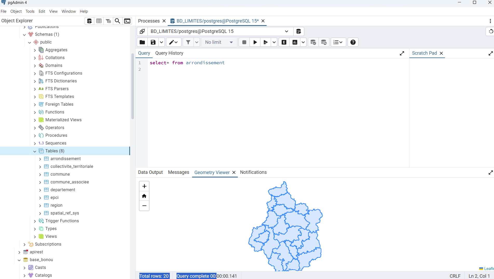

Géomatique, Limnologie, Environnement et Territoires · Université d'Orléans · 2024-2025 · UE Base de Données
Base de données PostgreSQL/PostGIS des limites administratives
Structuration et sécurisation d'une base spatiale pour la Région Centre-Val de Loire
Contexte et objectif
L'objectif de ce travail est d'intégrer les limites administratives de la BD TOPO (IGN) de la région Centre-Val de Loire dans un Système de Gestion de Base de Données Géospatiales (SGBD-G) PostgreSQL/PostGIS, afin de disposer d'une base robuste, intègre et interrogeable par requêtes géométriques, tout en garantissant une gestion sécurisée des accès (utilisateurs, groupes, permissions).
Démarche et outils
Les données ont été téléchargées au format Shapefile sur le portail Géoservices de l'IGN, puis vérifiées sous QGIS. Une base de données PostgreSQL dédiée (BD_LIMITES) a été créée et dotée de l'extension PostGIS, avant l'importation des shapefiles via l'outil PostGIS Shapefile Import/Export Manager. La structuration de la base s'est ensuite appuyée sur des instructions SQL reproductibles : filtrage des données, renommage des tables et identifiants, conversion des types de champs, ajout de clés étrangères et de contraintes d'intégrité référentielle. La sécurité de l'accès a été assurée par la création de rôles, de groupes et d'utilisateurs, avec des permissions différenciées, y compris des permissions par défaut appliquées automatiquement aux futures tables.
Résultats
Le projet aboutit à une base de données spatiale structurée et sécurisée pour les limites administratives communales de la région Centre-Val de Loire, avec des tables normalisées, des contraintes d'intégrité garantissant la cohérence des données, et une gestion centralisée mais flexible des droits d'accès. Ce travail illustre une approche méthodique de l'administration de bases de données géospatiales, directement réutilisable pour d'autres projets d'analyse territoriale.
